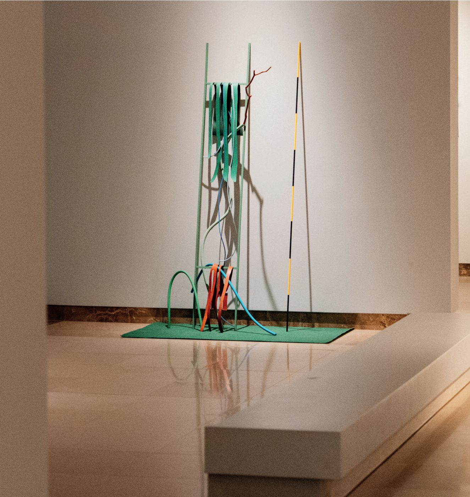

White Box #1: Intervalos
Museu do Caramulo · extended until 18 October

Curated by José Maçãs de Carvalho, the exhibition brings together work by Daniela Krtsch, Fabrizio Matos, João Fonte Santa and myself, made during a residency in the Serra do Caramulo in response to the museum's collections.